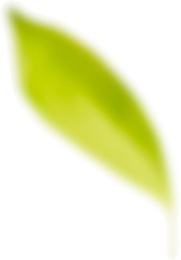

Non è troppo tardi!
ALKOTOX cambierà la tua vita
Il vantaggio principale di ALKOTOX è la tecnologia brevettata di estrazione ultrasonica dei componenti. Sotto l'influenza degli ultrasuoni l'estrazione è più efficace: le molecole mantengono la loro struttura originale e la loro forma biologicamente attiva. Questo rende il farmaco massimamente efficace nella lotta contro la dipendenza da alcol
ALKOTOX blocca naturalmente la scomposizione dell'alcol etilico, che provoca un'avversione persistente alle bevande alcoliche nell'uomo
In che modo ALKOTOX aiuta a sconfiggere la dipendenza?
Il frutto della citronella cinese
Neutralizza le voglie di alcol
Allevia la sindrome da sbornia e provoca un'avversione
persistente all'alcol. Normalizza il sistema nervoso, allevia la tensione mentale, migliora la memoria,
la coordinazione e la concentrazione
radice di liquirizia
Pulisce e rigenera il corpo
Neutralizza i veleni e le tossine nel corpo, aiutandolo a
recuperare più velocemente dopo l'assunzione di alcol a lungo termine. Purifica il sangue, aiuta gli
organi interni a tornare ad uno stato sano
Estratto di dente di leone
Consolida i risultati
Provoca un'avversione persistente all'alcol, previene lo
sviluppo della sindrome da astinenza, combatte la depressione e migliora l'umore